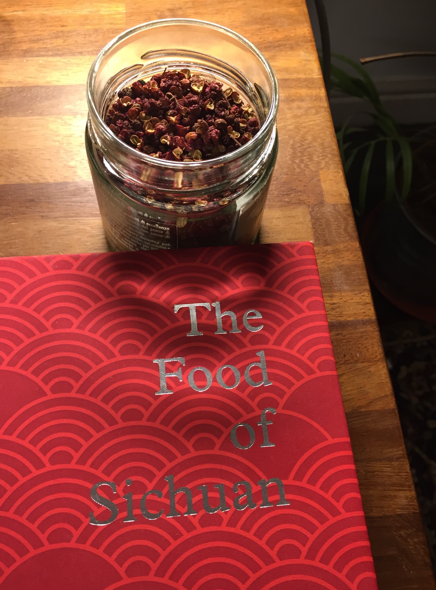

One of my secret passion (or not-so-secret, if you know me a bit) is cooking. Last weekend was devoted to the new edition of Fuchsia Dunlop’s The Food of Sichuan, widely considered as one of the best western-accessible resource on the topic. If you want to know, I cooked ‘Strange Flavour’ Bang Bang Chicken and Fish-Fragrant Aubergines. (Both will need much improvement—for example I ended up burning the peanuts while deep-frying them…— so if I ever happen to offer to cook you Sichuan food, ask for my only piece of resistance so far, the classic Mapo Tofu.)
The book has a fairly good historical introduction, where a few things caught my eye. Sure, the cuisine of Sichuan is renowned for its variety, and for the ability to combine several ingredients to create distinctive flavour combinations, but at the end of the day many of us will appreciate it for the signature “hot-and-numbing” taste given by the combination of Sichuan pepper (in the picture below) and abundant serving of chillies.

However, at odd with my intuitive idea of a millennia-old culinary tradition, chillies obviously “only reached China in the late sixteenth century […] probably brought to China by Portuguese traders”. The barbarian peppers were considered an ornamental plant: “it would be at least another century before the use of chillies to flavour food was documented”. According to this account, “it wasn’t until the reign of the Jiaqing Emperor (1796-1820)” that the plant was established as a local crop in Sichuan, that is, two centuries ago. Deep-frying, which I associated intimately with Chinese cuisine, seems even more recent in Sichuan: “an interest in deep-frying […] is said to have come from Americans in 1930s Chongqing.”
This reminded me of my previous research about Swedish food. (Yes, when living in Stockholm I had a blog about Swedish food, alas only in Italian, but you can have a look at some popular post, for example here or here.) Many classic recipes of the Swedish traditions were, in fact, the results of a few successful recipe books that appeared after the Second World War and canonised the Husmanskost, i.e. the “traditional” home-cooked Swedish food. Traditional is in quotation marks not by chance.
Another example is an Italian classic: pasta alla carbonara. Some even speculate that it was invented to please American soldiers during the liberation of Rome in 1944, by reminding them of their eggs and bacon breakfasts. Whatever this is true or not (it looks too good to be true though), the recipe is never mentioned before the Second World War, suggesting a recent origin. By the way: no onions and no cream.
I believe many other examples can be found for “traditional” and “classic” dishes. This is of course nothing new. Another of my not-so-secrets is that I had a classic anthropological formation, and, in socio-cultural anthropology, the idea that traditions are often invented or imagined is common currency. In How Traditions Live and Die Olivier Morin makes an analogous point using the example of Highland’s clans tartans, that were single-handedly created by a fabric producer in the 19th century.
Other traditions may be indeed millennia old. For example, Sara Graça da Silva and Jamie Tehrani used phylogenetic methods to analyse the relationships between folktales in Indo-European-speaking societies, and they claim to have found “evidence that one tale (‘The Smith and the Devil’) can be traced back to the Bronze Age”. The point is: we should be wary of considering traditions as, by-default, ancient and robust (perhaps because of an inborn tendency to copy others). Some may be, and others may be not. I wonder whether cultural evolutionists, beside Morin’s book and a less recent, and not very well-known I believe, book from Pascal Boyer (Tradition as Truth and Communication), have explored in detail the topic.
A more general reflection: a backbone of cultural evolution is population thinking, which implies that culture is an emergent, population-level, product of individual interactions, and individual interactions are where the causal magic happens (at least, this is how I read it). From this perspective, it looks natural to think to cultural traditions in a non-essentialist way: they are just the temporary result of individual interactions, looked at on a certain zoom level. However, sometimes “culture” is essentialised and used itself as an explanation, as in “we do it because of our culture”. These kinds of explanations are more and more present when reporting and justifying transcultural experiments (a good criticism of this notion of culture is in this paper from Lawrence Hirschfeld). Transcultural experiments are important and necessary, but we need to be cautious when we say that “eastern people”, “the Aka”, or any other experimental group, behave differently because of “culture”. It could be, but it could also be that many, interrelated, possibly short-lived, traditions create a specific situation, and it would be interesting to be able to disentangle these possibilities. Anthropologists (in anthropology the WEIRD problem is as a minumum a century-old one: a true tradition!) have recognised this problem, but the solutions proposed have not been, in my opinion, particularly successful, but this may be material for another post.